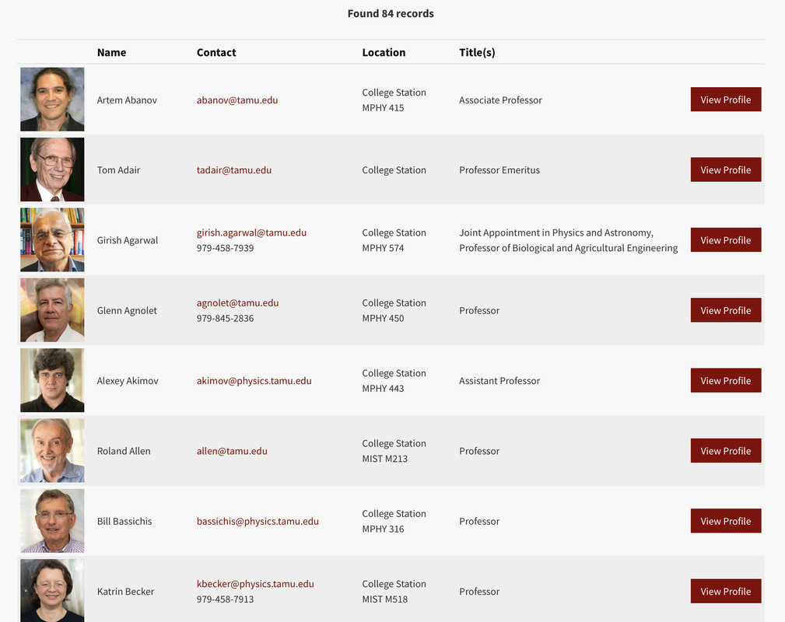
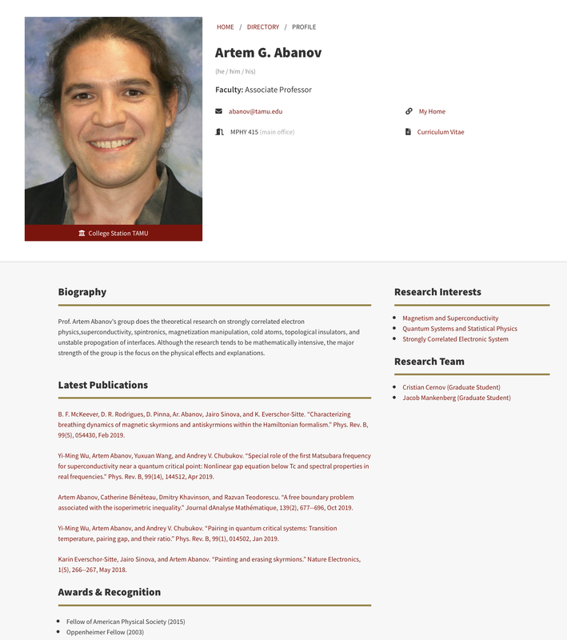

Find Research
A guide on finding research opportunities for you.
Here are some ways you can try to find research positions or research labs to work in:
- Sign up for our online platform!
- Skim through faculty pages at universities near you.
- Search for summer research programs (ex. RSI, Houston Methodist Summer Internships, etc.)
- If you know any family or friends that are in faculty positions, you can ask them about research positions.
It is important to keep in mind that you should always try to conduct research in subjects that you are interested in. When you force yourself to do research on topics you are not interested in, you are only doing a disservice to yourself. However, with that said, keep an open-mind when you go through professors and their respective research subjects.
Example of faculty page:
Example of faculty profile:
What can generally be found on the faculty profile page:
- Curriculum Vitae
- Researcher's personal website for their laboratory.
- Biography: A summarization of the researcher's lab work and description of the research group.
- Latest Publications: Read these papers to get an overview of what the professor is currently working on and what you could potentially be working on if you join the lab.
- Research Interests: Brief overview of the topics that the professor is specialized in. A easy way to assess if you are interested in this lab.
- Research Team: An introduction to the people you will potentially be working with.